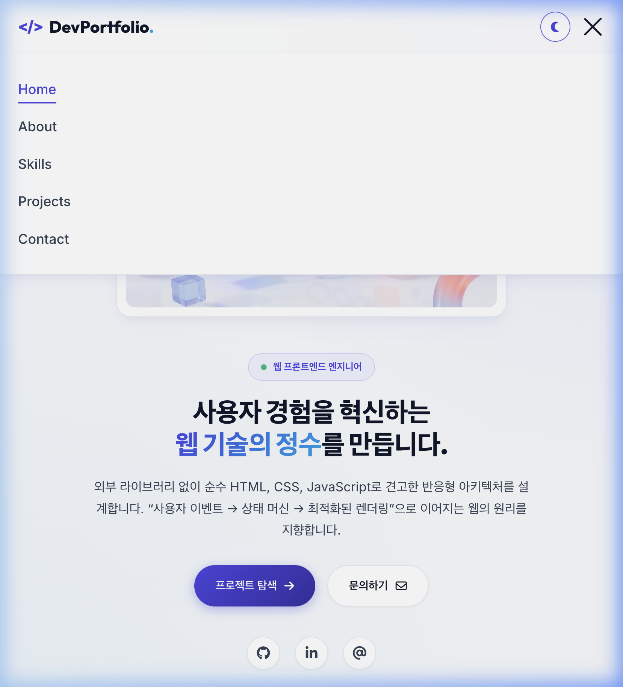

1-1. 브라우저 창 크기를 줄였을 때 레이아웃이 모바일에 맞게 변경되는가?
검증 결과 및 동작 설명
네, 완벽하게 변경됩니다. 모바일 퍼스트 CSS 미디어 쿼리를 기반으로 설계되어 창 폭을 768px 미만(예: 스마트폰 375px)으로 줄이면:
- 데스크톱 가로 메뉴가 숨겨지고 오른쪽 상단에 접근성이 완비된 모바일 햄버거 버튼이 자동으로 활성화됩니다.
- Projects 섹션의 다단 카드가 1열 카드 레이아웃으로 부드럽게 재배치됩니다.
- Hero 섹션은 모바일 가독성을 위해 텍스트와 그래픽이 세로 정렬(`flex-direction: column-reverse`)로 최적화됩니다.
실제 브라우저 실증 캡처 증거 (모바일 375px 해상도)
